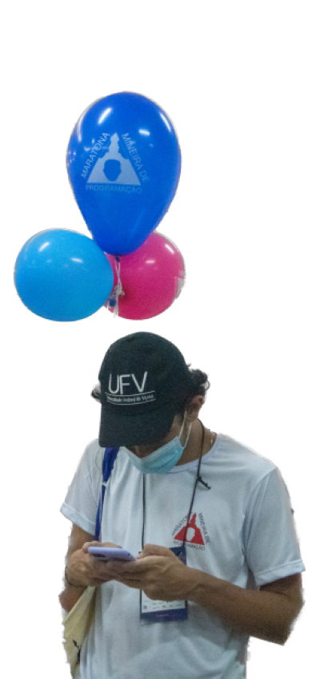
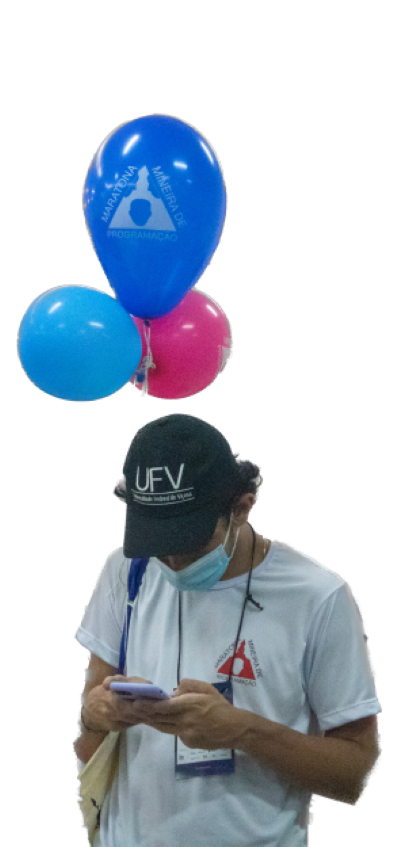

• Estudei a maior parte da minha vida em escolas públicas.
• Meu primeiro ano do ensino funtamental foi em uma escola particular, ela havia sido uma das
duas únicas escolas da minha região a conseguir um acordo com o MEC para que quem fizesse
aniversário até o dia 10/07 não fosse fora de faixa (sim, o dia do meu aniversáio), mesu pais
fizeram um esforço para me colocar lá para que eu fosse um pouco "adiantado".
• Minha brincadeira favorita quando criança era brincar de escolinha com minha prima.
Uma vez machuquei meu pé e estava engatinhando, ela falou que só íamos brincar
se eu começasse a pular de um pé só (aprendi com 15 minutos), isso reflete um
pouco da minha força de vontade para conseguir o que eu quero.
• Ganhei uma bolsa em uma escola particular no segundo ano do EM, que me
esforcei muito para conseguir, pois sabia o quanto isso me favorreceria (aqui
estou em uma das melhores federais do país).
• Sempre fui muito esforçado e me destaquei nas coisas que fazia, fui medalhista
na OBMEP e recentemente na OBI, Maratona Mineira e Brasileira.
 
